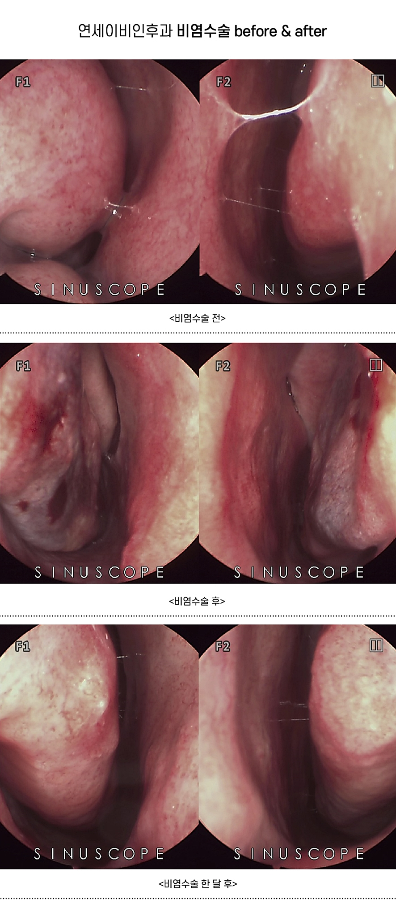

만성 비염 치료를 위한
하비갑개 점막하절제술 (MAIT)
일시적인 약물 치료나 무리하게 점막을 태우는 레이저 방식에서 벗어나, 증상이 재발하지 않도록 미세절삭기를 이용하여 하비갑개의 비대해진 조직만을 정밀하게 제거하여 코막힘의 근본 원인을 해결합니다.
왜 미세절삭 하비갑개 점막하절제술(MAIT)인가요?
만성 비후성 비염 환자의 코 내부를 보면 콧살(하비갑개)이 항상
부어있어 공기 길을 막고 있습니다. 비염 수술의 목표는 이렇게 비대해진
하비갑개 조직을 제거하여 코막힘의 근본 원인을 해결하려는 것입니다.
이렇게 비대해진 하비갑게 점막을 제거하기 위한 수술에는 여러 가지
방법이 있는데 대표적으로 고주파 코블레이터를 이용하거나 미세절삭기를
이용하는 수술이 있습니다.
고주파 수술은 열에너지를 방출하는 미세 바늘(coblator)을 점막하
조직에 삽입하여 조직 내부에서 응고 현상을 일으켜 점막을 축소시키는
방식입니다. 이 방식은 비교적 간단하게 시행할 수 있지만 시간이 지남에
따라 다시 점막이 두꺼워지면서 증상이 재발하는 경우가 많습니다. 즉,
일시적인 개선에는 도움이 될 수 있지만 장기적인 효과 면에서는
아쉬움이 있습니다.
 반면, 미세절삭기(microdebrider)를 이용한 수술은 점막을 최대한
보존하면서 내부의 비대해진 조직만을 선택적으로 제거합니다. 단순히
점막을 태우는 것이 아니라, 구조적으로 코 내부의 공간을 넓혀주기
때문에 코막힘 개선 효과가 확실하고 무엇보다
재발률이 낮다는 점이 큰 장점입니다. 또한 점막
손상이 적기 때문에 수술 후 건조감이나 이물감 등 불편함이 적은
편입니다.
반면, 미세절삭기(microdebrider)를 이용한 수술은 점막을 최대한
보존하면서 내부의 비대해진 조직만을 선택적으로 제거합니다. 단순히
점막을 태우는 것이 아니라, 구조적으로 코 내부의 공간을 넓혀주기
때문에 코막힘 개선 효과가 확실하고 무엇보다
재발률이 낮다는 점이 큰 장점입니다. 또한 점막
손상이 적기 때문에 수술 후 건조감이나 이물감 등 불편함이 적은
편입니다.

수술 권장 대상
- ✔ 1년 이상 약물을 복용해도 코막힘이 지속되는 분
- ✔ 비중격만곡증 수술 후 비후성 비염이 동반된 분
- ✔ 환절기마다 알레르기 증상으로 일상생활이 힘든 분
- ✔ 코막힘으로 인해 구강 호흡 및 수면 장애가 있는 분
당일 수술 프로세스
입원수속
수술 1시간전에 도착하여 입원수속을 합니다.
국소 마취 및 처치 (약 10분)
마취액을 적신 솜을 코안에 넣어 안전하게 점막 마취를 진행하므로 통증 걱정을 덜 수 있습니다.
하비갑개 점막하절제 수술 시행 (약 15분)
정밀 고주파 장비를 활용해 비대해진 하비갑개 볼륨을 선택적으로 축소시킵니다.
지혈 및 당일 안정 후 퇴원
출혈 유무를 꼼꼼히 확인한 후 별도의 입원 없이 당일 귀가하여 일상 복귀가 가능합니다.
자주 묻는 질문 (FAQ)
Q. 비염수술을 받아도 금방 재발하지 않나요?
수술 후 재발하는 현상은 일반적인 비염수술(고주파 수술;코블레이터 수술)에서 흔히 발생하는 현상으로, 미세절삭기(microdebrider)를 사용한 하비갑개점막하절제방식으로 수술을 하면 재발률이 현저히 낮습니다.
Q. 고주파 수술과 미세절삭기를 이용한 수술의 차이점은 무엇인가요?
고주파 수술은 점막에 특수기구(coblator)를 이용한 탐침을 삽입하여 고주파 저열을 가함으로서 하비갑개조직의 비가역적인 변형을 일으키는 방식입니다. 수술시간이 짧고 출혈량이 적은 장점이 있지만 연구결과 1년~3년 내에 증상이 재발할 확률이 높은 단점이 있습니다. 미세절삭기 수술은 하비갑개조직의 내측부분 조직을 직접 갈아서 흡입하여 부분적으로 없애는 방식으로 수술시간이 고주파 수술에 비해 길고 출혈량도 더 많은 편이지만 재발률이 현저히 낮은 장점이 있습니다.
Q. 수술할 때 많이 아픈가요?
고주파 수술 및 미세절삭기 수술 모두 통증은 거의 없으며, 약간의 뻐근한 느낌 정도만 동반됩니다. 수술 후에도 타이레놀 등의 가벼운 진통제로 조절 가능한 수준입니다.
Q. 비염수술을 받고 출근은 언제부터 가능할까요?
수술 다음날부터도 과도한 육체활동이 없다면 출근 및 일상생활이 가능합니다. 저희병원의 수술방식은 당일수술 당일퇴원이며 퇴원시 비강내부에 막아높은 거즈나 스폰지 등은 없는 상태로 귀가합니다.
Q. 비염수술을 받으러 보호자 없이 혼자가도 되나요?
미성년자를 제외한 성인이라면 보호자 없이 혼자여도 전혀 문제가 없습니다.
Q. 수술비용은 실손보험(실비) 처리가 되나요?
치료 목적의 만성 비염 수술은 법정 비급여 혹은 급여 항목에 해당하여 가입하신 실손의료보험 약관에 따라 대부분 보장 혜택을 받으실 수 있습니다. (정확한 금액은 원내 수납 시 서류 발급 안내를 도와드립니다.)